CS184/284A Spring 2026 Homework 2 Write-Up
Link to webpage: TODO confirm deployed URL https://cal-cs184-student.github.io/hw-webpages-Hoponga/hw2/
Link to GitHub repository: https://github.com/cal-cs184-student/hw2-meshedit-pgangs

Overview
In this homework we implemented both parametric surface evaluation and local triangle-mesh editing. In Section I, we used de Casteljau subdivision to evaluate Bezier curves and Bezier patches from their control points. In Section II, we worked directly with the half-edge mesh data structure to compute area-weighted vertex normals, perform local edge flips and splits, and then combine those operations into Loop subdivision for mesh upsampling.
The main thing we learned from this homework is how much geometric behavior depends on connectivity, not just vertex positions. The Bezier parts show how repeated interpolation produces smooth geometry from a small control set, while the half-edge parts show that even a very local remeshing operation requires careful bookkeeping of every pointer. Loop subdivision tied the two themes together: a smooth limit surface emerges from repeated local rules applied on a discrete mesh.
Section I: Bezier Curves and Surfaces
Part 1: Bezier curves with 1D de Casteljau subdivision
de Casteljau's algorithm evaluates a Bezier curve by repeatedly linearly
interpolating between consecutive control points at a parameter \( t \in
[0, 1] \). Starting from the original control polygon, one round of
interpolation produces a new list with one fewer point; repeating that
process eventually leaves a single point on the curve. In our
implementation of BezierCurve::evaluateStep(...), we
iterate through the input control points and compute each new point with
the formula \( (1 - t)p_i + tp_{i+1} \), storing the result in a new
std::vector<Vector2D>. Each call performs exactly one
subdivision level, which matches the GUI behavior when stepping through
the construction with E.
For the screenshots below we used a custom six-control-point curve.
Pressing E steps through each subdivision level, so the
images document the full progression from the original control polygon
to the final evaluated point. The final image in this section shows the
same curve after moving several control points and changing \( t \) with
the mouse wheel, which demonstrates how the intermediate construction
changes continuously with both the geometry and the evaluation
parameter.
The table below records each stage of the de Casteljau construction for our six-control-point test curve, from the original control polygon down to the final evaluated point.
|
|
evaluateStep(...).
|
|
|
|
|
|
|
Part 2: Bezier surfaces with separable 1D de Casteljau
To evaluate a Bezier surface, we extended the 1D de Casteljau routine in
a separable way. First, for each row of 3D control points, we evaluated
a 1D Bezier curve at parameter \( u \), producing one intermediate point
per row. Those intermediate points form another control polygon, and we
then evaluated that second 1D Bezier curve at parameter \( v \). In
code, BezierPatch::evaluateStep(...) performs one
interpolation round on a vector of Vector3Ds,
evaluate1D(...) repeatedly applies that step until only one
point remains, and evaluate(...) uses
evaluate1D(...) first across rows and then across the
resulting column of points. In other words, the surface code reuses the
same 1D de Casteljau logic twice instead of requiring a separate 2D
interpolation routine.
This decomposition mirrors the math in lecture: the surface is evaluated by nesting two 1D de Casteljau evaluations. The benefit is that the 2D surface code stays compact because it reuses the exact same interpolation logic as the curve case.
bez/teapot.bez rendered by the Bezier
surface evaluator.
Section II: Triangle Meshes and Half-Edge Data Structure
Part 3: Area-weighted vertex normals
For Vertex::normal(), we traversed all faces incident to
the current vertex using the half-edge pattern
h = h->twin()->next(). For each neighboring triangle,
we recovered its three vertex positions, formed two edge vectors, and
took their cross product to obtain a face normal scaled by twice the
triangle area. Summing these cross products over the one-ring therefore
gives an area-weighted normal automatically. We then normalized the
accumulated vector once at the end to produce the final unit normal.
The most important implementation detail was keeping the orientation consistent. If the cross product order is reversed, the normals point inward and the mesh becomes unnaturally dark under shading. Using a const half-edge iterator throughout this function also ensured that normal evaluation did not accidentally mutate the mesh.
|
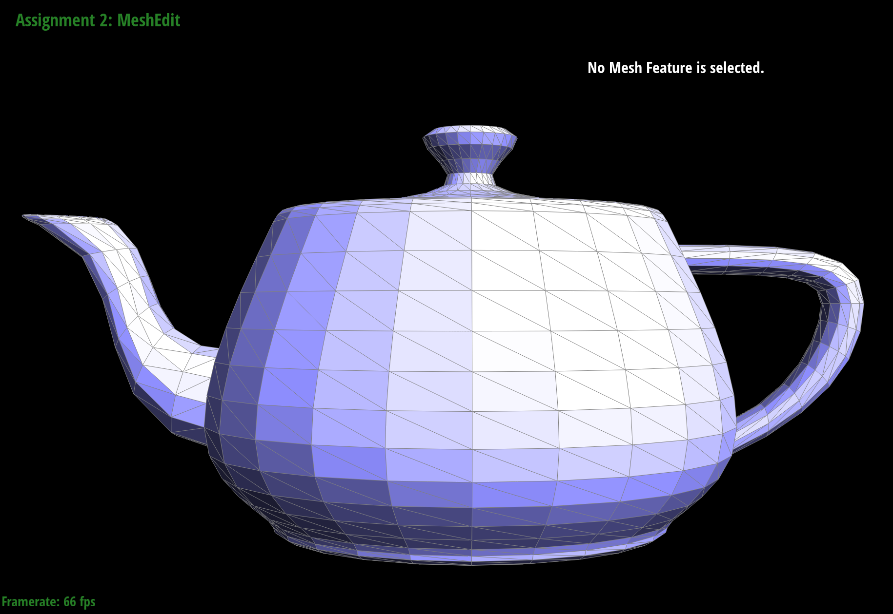 dae/teapot.dae with default flat shading.
|
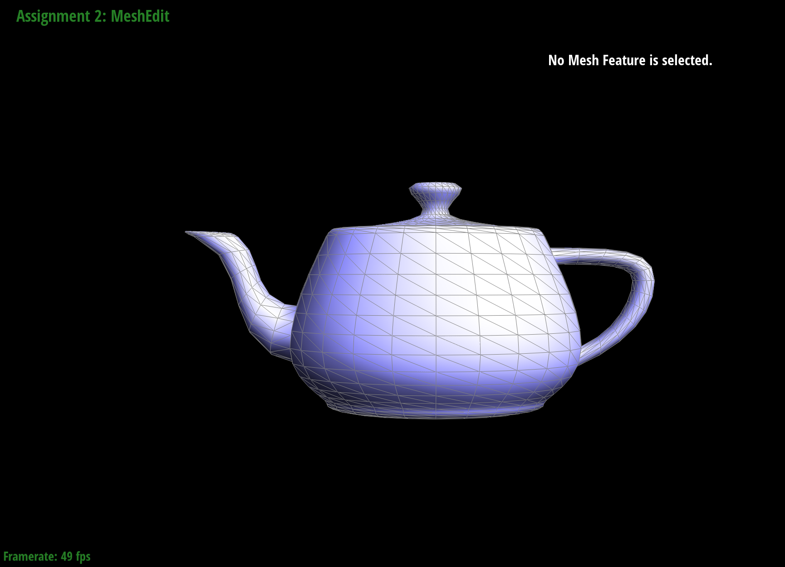 dae/teapot.dae after pressing
Q to enable area-weighted vertex normals.
|
Part 4: Edge flip
We implemented HalfedgeMesh::flipEdge(...) by first
collecting the two triangles adjacent to the selected edge and naming
all six half-edges, four vertices, five edges, and two faces involved in
the local neighborhood. If either adjacent face is a boundary face, the
function returns immediately because boundary edges should not be
flipped. Otherwise, we reassigned the half-edge connectivity so that the
old edge between \( b \) and \( c \) becomes the new edge between \( a
\) and \( d \), while keeping the same mesh elements and only rewiring
their pointers. Because only a fixed local neighborhood is touched, the
flip runs in constant time.
The most useful debugging trick here was to draw the local before-and-after configuration on paper and then explicitly reset every pointer, including pointers that did not seem to change. That approach is a little verbose, but it dramatically reduced pointer bugs. We also found it helpful to flip the same edge multiple times in a row and verify that the mesh stayed manifold and visually consistent, since a flip that works once can still leave stale pointers behind.
|
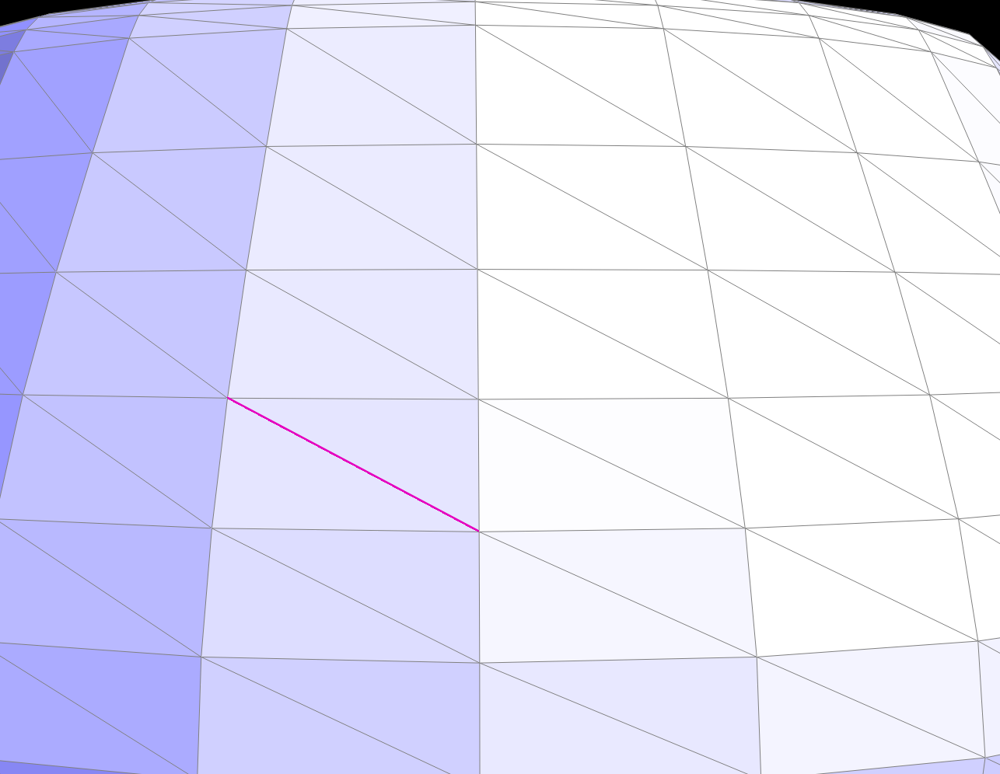 |
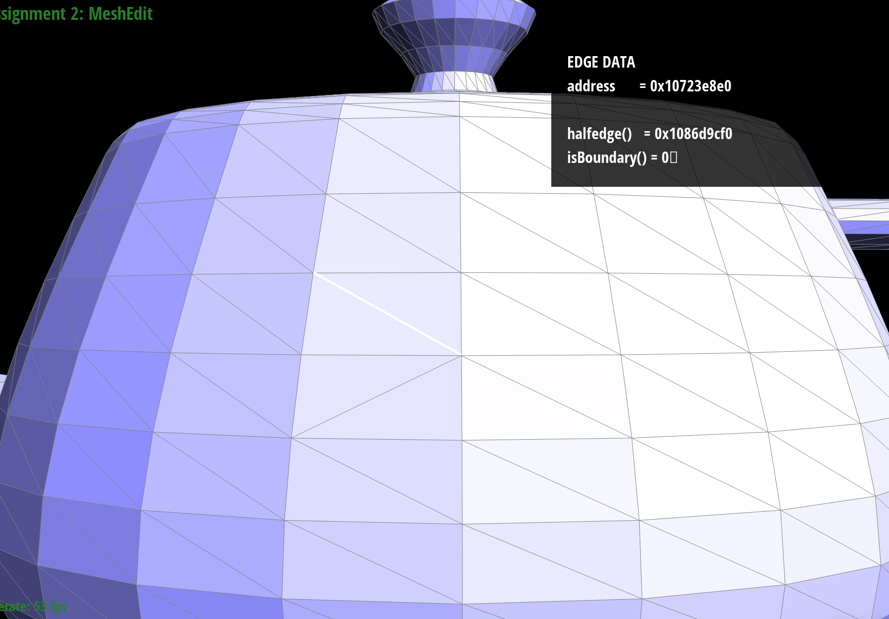 |
The main debugging issue in this part was making sure every vertex, edge, face, and half-edge still pointed into a valid local configuration after the flip. When one pointer was wrong, the GUI would often still render something close to correct until we tried another nearby operation, so repeated local stress-testing was much more informative than a single successful flip.
Part 5: Edge split
We implemented HalfedgeMesh::splitEdge(...) on interior
edges by creating the new midpoint vertex, the required new half-edges,
edges, and faces, and then reconnecting the local neighborhood into four
triangles. The new vertex position is initialized to the midpoint of the
original edge, and boundary edges are ignored in this implementation. As
with edge flip, we treated the split as a purely local rewrite: we first
named the original neighborhood, then created the new elements, and
finally assigned every pointer in the final configuration. This also
keeps the operation local and constant-time.
The trickiest part of edge split was keeping track of which half-edges should point to the old vertices versus the new midpoint vertex after the topology changes. The safest workflow was to label everything in a sketch, write down the final connectivity, and then translate that diagram directly into pointer assignments. After splitting, we tested the result by mixing splits and flips in both nearby and distant regions of the mesh, which is a good way to expose hidden connectivity errors.
|
|
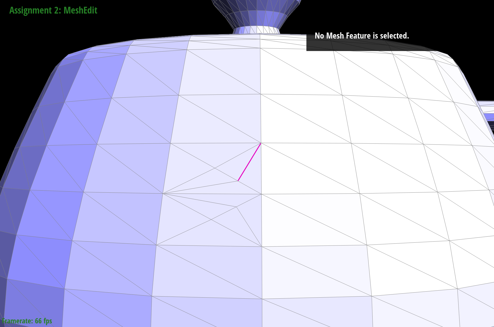 |
|
|
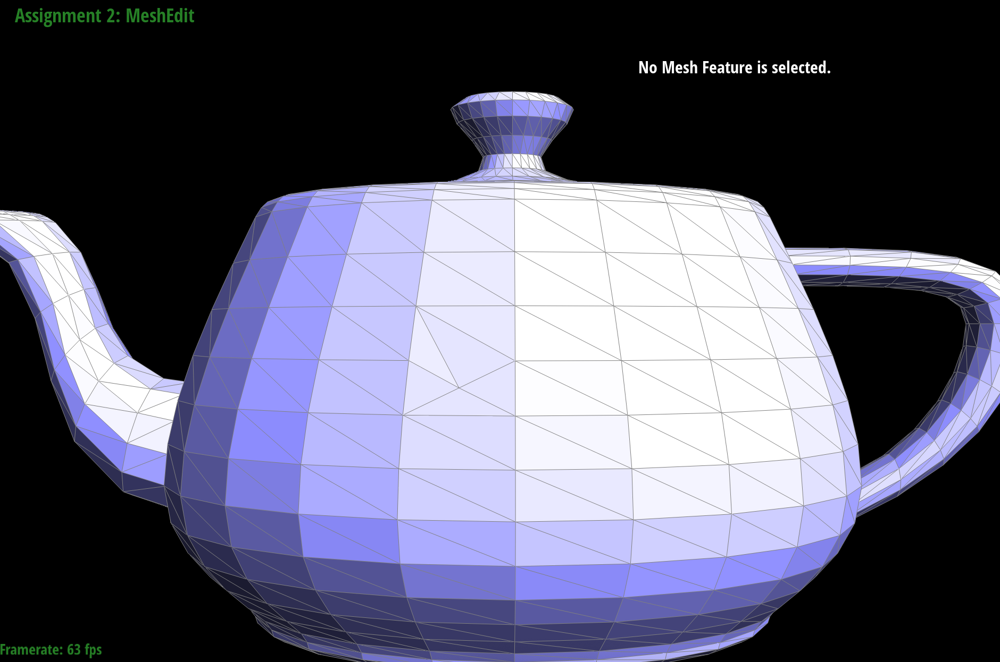 |
The hardest bug pattern here was that a split could appear correct immediately after execution but still leave one stale pointer that caused a later traversal failure. Verifying the local one-ring carefully and then trying more edits around the modified area was the most reliable way to catch those issues. We did not implement the optional boundary-edge split extension for this submission.
Part 6: Loop subdivision for mesh upsampling
We implemented Loop subdivision in the recommended three-phase order.
First, we traversed the original mesh and computed the updated positions
for all old vertices, storing them in Vertex::newPosition.
For an old vertex of degree \( n \), we used \[ (1 - nu)\mathbf{v} + u
\sum \mathbf{v}_i, \] where \( u = \frac{3}{16} \) when \( n = 3 \) and
\( u = \frac{3}{8n} \) otherwise. During the same pass, we computed each
original edge midpoint position and stored it in
Edge::newPosition using \[ \frac{3}{8}(A + B) +
\frac{1}{8}(C + D). \] Second, we split every original edge exactly
once, marked newly created elements with the provided
isNew flags, and then flipped each new edge that connects
one old vertex and one new vertex. Third, after the connectivity had
been updated to the 4-1 subdivided mesh, we copied each stored
newPosition back into Vertex::position.
The key implementation idea was to compute all weighted positions before
changing any connectivity. This matters because the Loop rules are
defined on the original mesh, and once the mesh has been subdivided it
becomes much harder to distinguish old vertices from newly inserted ones
and to recover the original one-ring neighborhoods. We also used the
provided isNew flags to distinguish original versus
inserted elements, then flipped only new edges that connect one old
vertex and one new vertex. The other subtle point was iterating over the
original edges safely: because edge splitting mutates the mesh, we saved
the next edge iterator before calling splitEdge(...).
After repeated Loop subdivision, sharp corners and creases become
progressively rounded because each update replaces vertex positions by
weighted averages of nearby geometry. Pre-splitting around a sharp
feature can reduce how quickly that feature disappears, since extra
control vertices give the local neighborhood more freedom to follow the
intended shape. On dae/cube.dae, the default triangulation
introduces directional bias because the diagonals on each face are not
arranged symmetrically. Repeated subdivision preserves and amplifies
that bias, which makes the cube drift toward an asymmetric rounded
shape. Preprocessing the cube with a symmetric pattern of flips, and if
needed additional balanced splits, makes the connectivity more uniform
across faces and produces much more symmetric subdivision results.
|
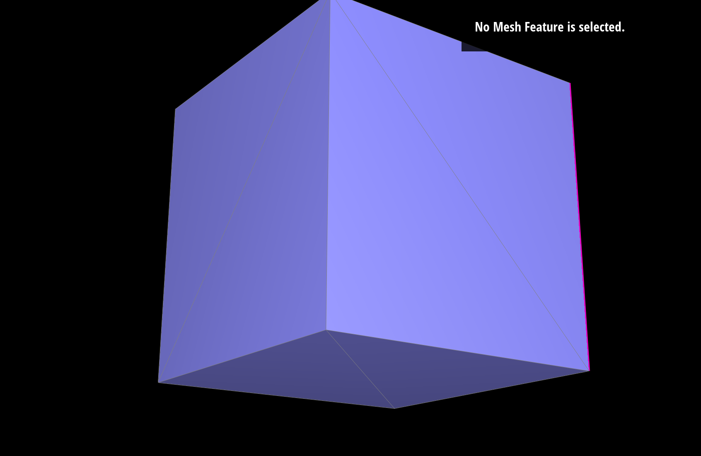 |
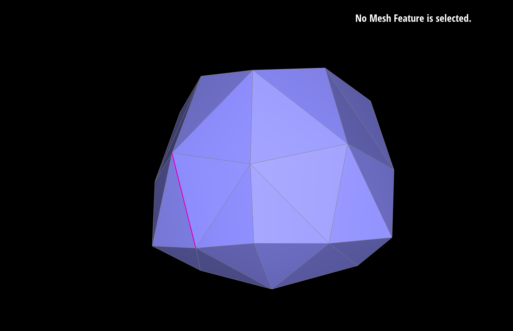 |
|
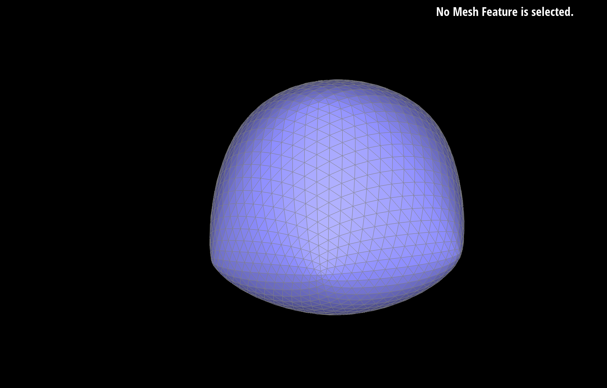 |
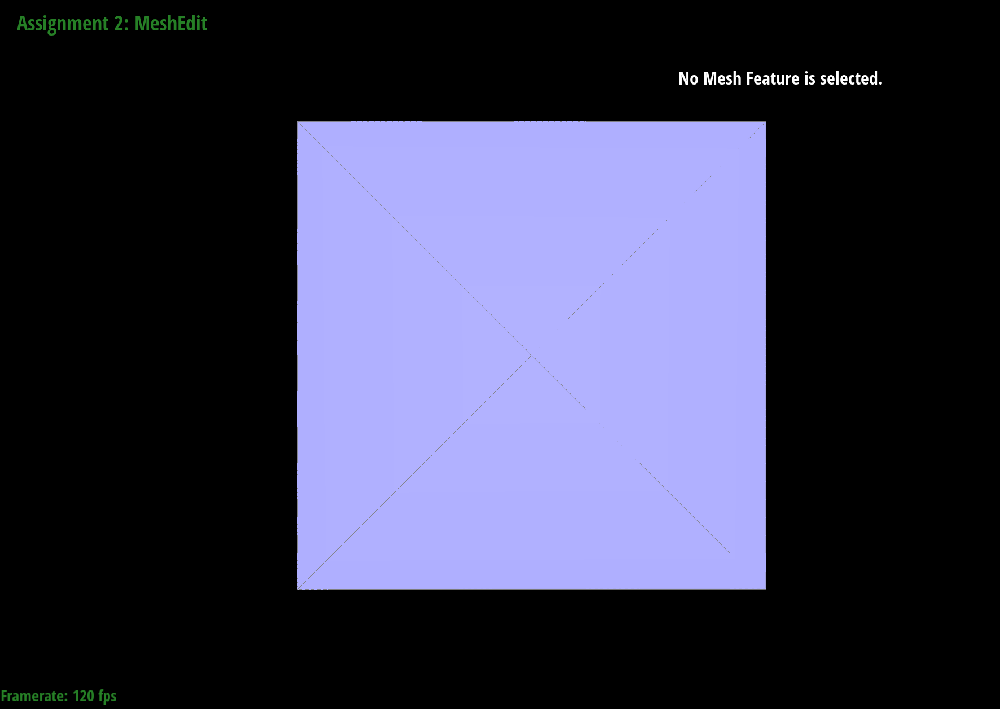 |
|
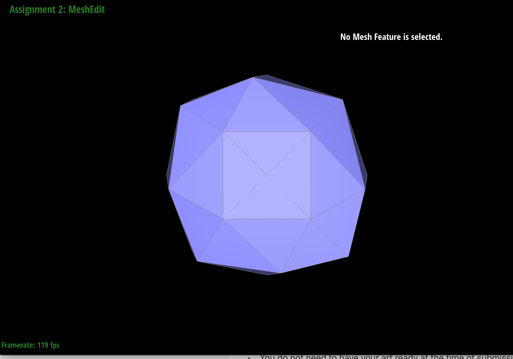 |
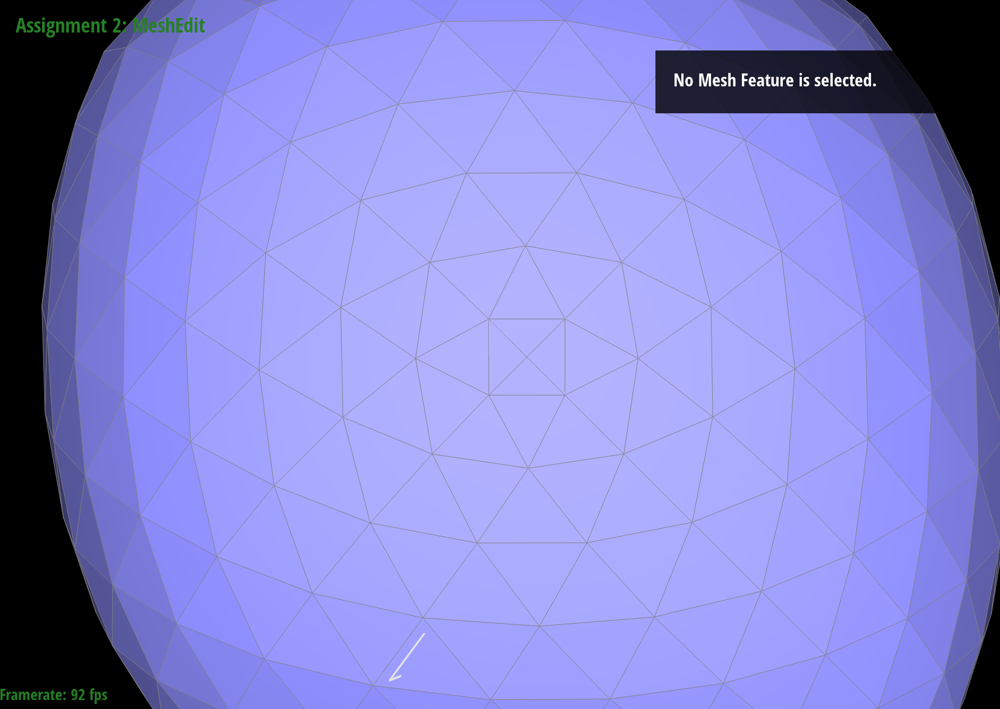 |